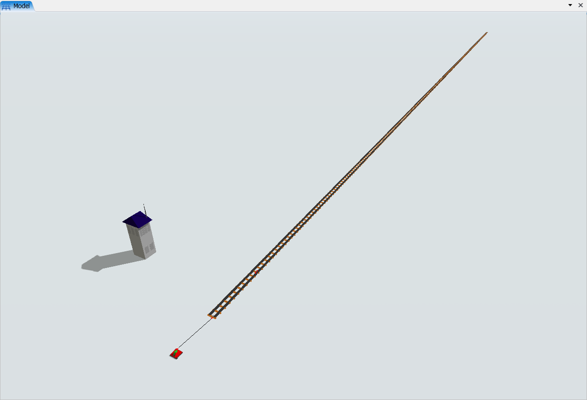
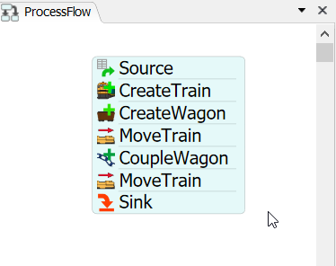

Exercise Information
Four wagons are parked 300 meters away from a station, we need
to send a locomotive there in order to bring those wagons back
to the station. The locomotive has a maximum speed of 8 m/s when
uncoupled and a maximum speed of 4 m/s when coupled. The path
from the station to the wagons is a straight rail. Create a
model that represents this problem.
Step 1 Creating objects
In order to achieve the solution for the problem, you should
create the following objects:
- Create one SourceTrain.
-
Create three Rails, then resize Rail2 xvalue to 300. Connect
the SourceTrain to the Rail1 (using the A key)
and then connect Rail1 to Rail2 and Rail2 to Rail3 via
proximity.
-
Create a RailControlPoint and place it on Rail3. The
RailControlPoint should change color if it is connected
correctly to the Rail. We recommend the creation of the
RailControlPoint in a empty space and, after that, you can
place it on the Rail.
Your model should be looking like this:

Step 2 Processflow Configuration
In order to achieve the solution for the problem, you should
create the following processflow tasks:
- Create a Schedule Source.
- Create a "CreateTrain" and a "CreateWagon" activities.
- Create a "MoveTrain" activity.
- Create a "CoupleWagon" activity.
- Create a "MoveTrain" activity.
- Create a Sink.
Your processflow should be looking like this:

To configure your processflow tasks follow the steps:
-
On "CreateTrain" activity, point the "Source Train" reference to your
SourceTrain, set the "Uncoupled Unloaded" to 8 and set the
"Coupled Unloaded" to 4 on the Customize Locomotive Speeds.
-
On "CreateWagon" activity, point the "Control Point" reference to the
RailControlPoint on Rail3, set wagons quantity to 4 and check "Reverse Create".
-
On "MoveTrain" activity, set train reference to "token.train" and destiny
to the label "token.wagon".
-
On "CoupleWagon" activity, set train reference to "token.train" and wagon
reference to "token.wagon".
-
On "MoveTrain" activity, set train reference to "token.train" and destiny
to Rail1.
With this configuration your model is ready.